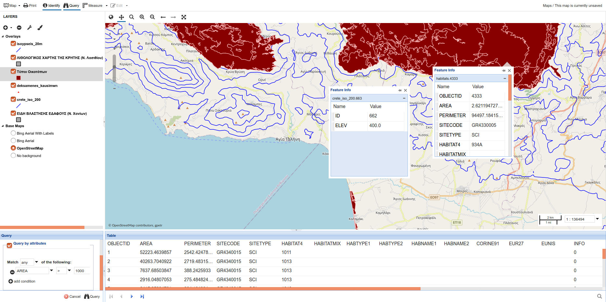

Τo Crete-GIS είναι ένα οικοσύστημα εφαρμογών της Περιφέρειας Κρήτης με αντικείμενο τη γεωχωρική πληροφορία
Μπορείτε να αναζητήσετε, να ανακτήσετε, να μελετήσετε και να κατεβάσετε γεωχωρικά δεδομένα που αφορούν το περιβάλλον, τη γεωργία, την κατασκευή, την υγεία κ.α ΕΙΣΟΔΟΣ
Το Crete - GIS φιλοδοξεί να ενσωματώσει αποθετήριο δορυφορικών εικόνων παρέχοντας γνώση για την ανάπτυξη της οικονομίας του νησιού (πχ ποιότητα των καλλιεργιών). ΕΙΣΟΔΟΣ

Περιλαμβάνονται δυνατότητες ανάλυσης δεδομένων, δημιουργίας και εκτύπωσης χαρτών ΕΙΣΟΔΟΣ
Εφαρμογή e-Urban: Δίνει την δυνατότητα στους χρήστες να θέσουν ερωτήματα και να ενημερωθoύν για χωροταξικά θέματα. ΕΙΣΟΔΟΣ
Εφαρμογή Εντός - Εκτός: Με ένα απλό κλικ στο σημείο ενδιαφέροντος, η εφαρμογή Εντός-Εκτός, ενημερώνει τους πολίτες για τις επιφάνειες (πχ περιοχές Natura, όρια οικισμών) που το σημείο αυτό βρίσκεται εντός εμφανίζοντας ταυτόχρονα τα κοντινότερα στοιχεία των περιοχών που βρίσκεται εκτός. ΕΙΣΟΔΟΣ
Εφαρμογή e-Road: Μία εφαρμογή για την καταγραφή προβλημάτων του οδικού δικτύου, την ενημέρωση για τις μερεωρολογικές συνθήκες και την παρακολούθηση της ποιότητας του αέρα ανάλογα με τη γεωγραφική θέση του χρήστη